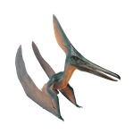

Useful Website
Barbaridactylus is a medium-sized pterosaur that lived towards the end of the late Cretaceous period, around 66-72 million years ago. This genus is distinct from most other pterosaurs in that it is part of the nyctosaurid family, which rarely walked on land and was specially adapted for almost constant flight. It takes its name from the Barbary Coast of North Africa, near to where Barbaridactylus was discovered.
